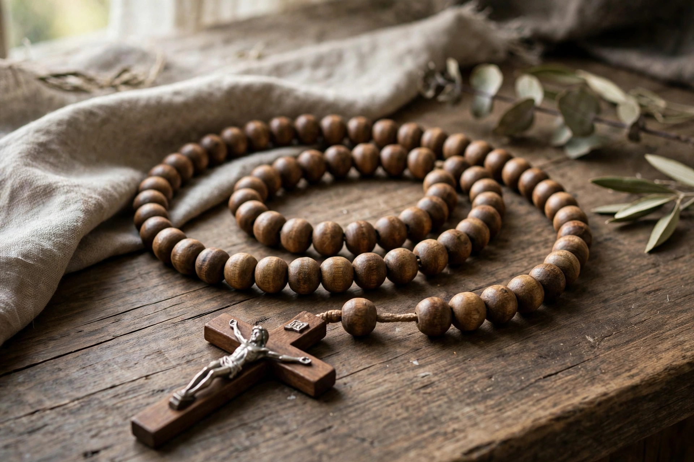

Rosary

The Rosary (from Latin rosarium, "rose garden") is a set of prayers used primarily in the Catholic Church, and also the name of the string of beads used to count them. The prayers combine vocal prayer — the Our Father, Hail Mary, and Glory Be — with meditation on episodes ("mysteries") from the lives of Jesus Christ and the Virgin Mary.
1 Structure
2 The mysteries
3 History
4 In other traditions
Structure
A standard rosary has a crucifix, a centrepiece, and five sets of ten small beads (decades) separated by larger beads. The prayer begins with the Apostles' Creed and an Our Father, followed by decades in which each large bead begins an Our Father and the ten small beads carry Hail Marys, concluding each decade with a Glory Be and often the Fatima prayer.
The mysteries
Traditionally fifteen mysteries are grouped in threes: the Joyful (Annunciation, Visitation, Nativity, Presentation, Finding in the Temple), the Sorrowful (Agony in the Garden through Crucifixion), and the Glorious (Resurrection, Ascension, Pentecost, Assumption, Coronation of Mary). In 2002 Pope John Paul II added five Luminous Mysteries, drawn from Christ's public ministry, in his apostolic letter Rosarium Virginis Mariae.
History
Counting prayers with strings of knots or beads is ancient and widespread. The Catholic rosary took shape in the late Middle Ages, aided by Carthusian and Dominican promoters — tradition attributes it to St Dominic. Pope Pius V standardised the form in 1569 and instituted the feast of Our Lady of Victory (later Our Lady of the Rosary) after the Battle of Lepanto in 1571. It remains one of the most recognisable Catholic devotions, promoted by popes and associated with apparitions such as Lourdes and Fátima.
In other traditions
Some Anglicans use the rosary or the Anglican prayer beads (a set of 33 beads devised in the 1980s), and analogous counting devices exist in Islam (misbaha), Buddhism (mala), Hinduism, and Orthodox Christianity (prayer ropes).